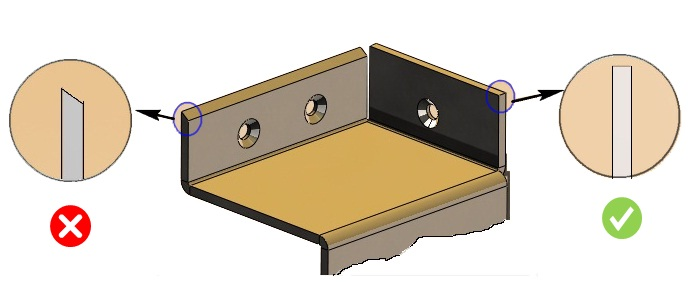

製造を容易にするため、シートメタル部品におけるナイフエッジ形状は回避してください。
シートメタル部品でナイフエッジを実現するには追加工が必要となる場合があり、その結果、製品コストが増加します。また、ナイフエッジの状態は、場合によっては疲労破壊を引き起こす要因にもなります。
一般的に、コストの削減、製造の複雑さの低減、および疲労破壊につながる応力状態を回避するため、ナイフエッジの状態は避けるべきです。
